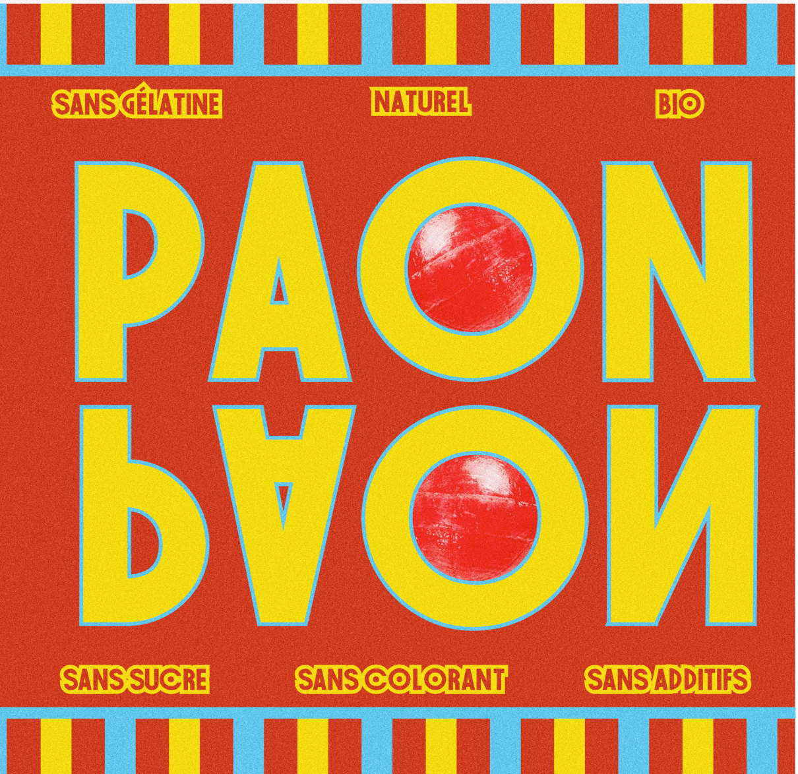

Beatmakers
Édition
Série de trois livrets consacrés à des beatmakers présentés dans les podcasts d’Arte Radio. Je travaille sur la manière dont chaque artiste découpe ses samples (extrait sonore) avec, en première de couverture, le nom de l’artiste découpé et recomposé. En quatrième de couverture, j’indique le nom complet de l’artiste ainsi qu’un texte de présentation de son œuvre.